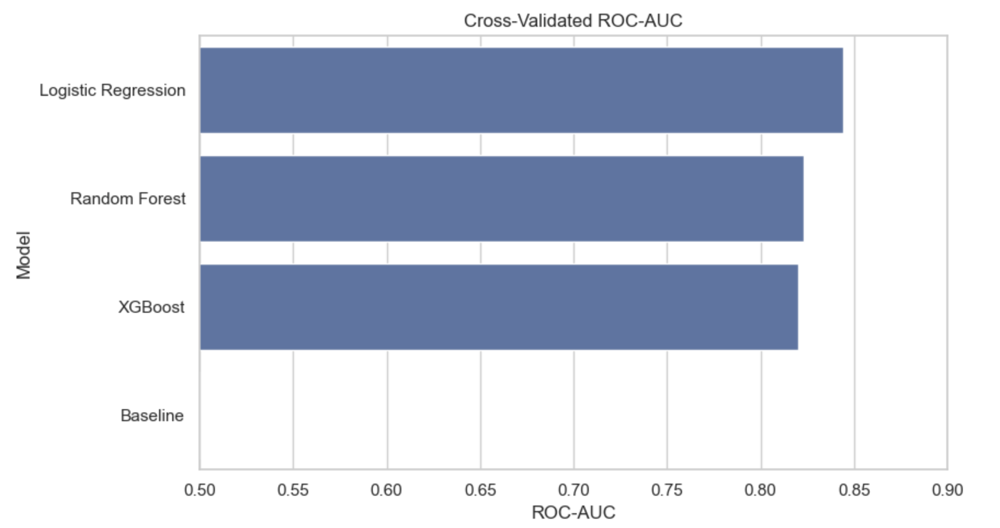

Customer Churn Prediction
Predicción del abandono de clientes mediante XGBoost, optimización del umbral e interpretación de los principales factores asociados al churn.

01 · PROBLEMA
Identificar clientes con riesgo de abandono
El proyecto desarrolla un modelo de clasificación orientado a distinguir clientes con diferentes niveles de riesgo de abandono y evaluar hasta qué punto las predicciones pueden apoyar estrategias de retención.
02 · APPROACH
Un pipeline completo de Machine Learning
El flujo combina modelización predictiva, validación, optimización de hiperparámetros, selección del umbral de clasificación e interpretación del modelo.
03 · MODEL
XGBoost optimizado
El modelo final utiliza XGBoost y se evalúa sobre un conjunto de test que permanece separado durante el desarrollo.
04 · THRESHOLD
El modelo no termina en 0,5
Tras optimizar el umbral de decisión, el modelo alcanza un Recall del 75,67 % y un F1-score del 64,25 %. El análisis permite estudiar el equilibrio entre identificar más clientes que abandonan y mantener una precisión razonable.
05 · INTERPRETABILITY
Conectar predicciones con decisiones
SHAP aporta una capa de interpretabilidad que permite estudiar qué variables contribuyen a las predicciones y conectar el comportamiento del modelo con posibles estrategias de retención.
06 · CONCLUSION
Del riesgo predictivo a la retención
El proyecto demuestra un flujo reproducible desde los datos de clientes hasta la evaluación e interpretación de un modelo de churn. El modelo permite distinguir clientes con diferentes niveles de riesgo y ofrece una base cuantitativa para priorizar posibles acciones de retención.
07 · TECH STACK